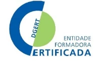
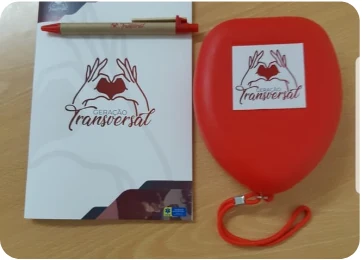

729
Saúde
Oferta formativa no domínio da saúde, de acordo com as necessidades dos participantes e organizações.
A Geração Transversal é entidade formadora certificada pela DGERT nas áreas de educação e formação 729, 762 e 861.
Construímos soluções orientadas para a aquisição e atualização de competências profissionais.

Oferta formativa no domínio da saúde, de acordo com as necessidades dos participantes e organizações.

Qualificação para diferentes contextos de intervenção e apoio social.

Competências relacionadas com a proteção, a prevenção e a segurança.
Podemos organizar ações de Unidades de Formação de Curta Duração (UFCD) e Unidades de Competência (UC) enquadradas nas áreas DGERT 729, 762 e 861, para particulares e organizações, mediante programação e condições de cada formação.
Nas formações em modalidade online, utilizamos o Moodle para disponibilizar materiais, atividades e acompanhamento. Estágios e componentes práticas cumprem as condições específicas do percurso.
Pedir uma formação →Uma experiência de aprendizagem flexível, com recursos digitais e acompanhamento pedagógico nas ações aplicáveis.
Explore 7 UFCD selecionadas e o curso de Técnico Auxiliar de Saúde. Pode também solicitar outras UFCD e UC das áreas certificadas.
Fale com a nossa equipa e apresente as necessidades da sua organização.